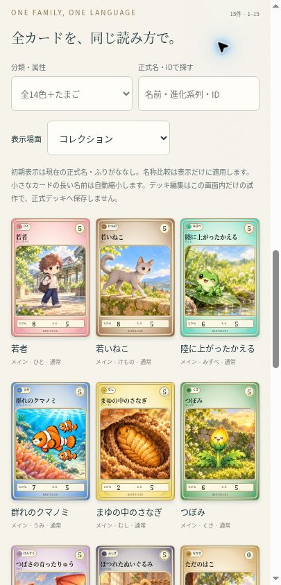
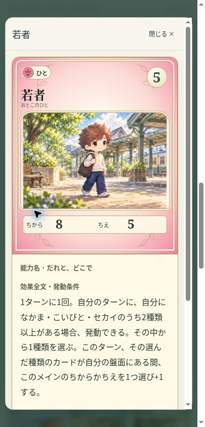

← V9比較へ
表示と操作の確認結果
2026-11-15 · クラウドChromium
459枚＋たまご、14色、追加7枚。320 / 375 / 390 / 430pxで合計11,040表示を測定しました。
- 正式名：4幅×一覧・40px手札・64px盤面・詳細＝7,360表示
- 名称候補：4幅×一覧・詳細＝3,680表示
- 名前の折り返し・はみ出し、コストとの重なり、補助名と絵の重なり、本文の見切れを検出せず
- 詳細477段落×8条件が元データに完全一致。通常面の本文は0
- 追加7枚の詳細開閉・表裏反転、たまごの説明全文、名称切替を確認
- 対戦UIは4幅を確認。実際の選択、宣言のキャンセルと再選択・確定、終局を確認
WebKit・iPhone Safari実機は未検証です。
40px手札では最長名が約2.46pxまで縮みます。省略せず収まる設計ですが、このサイズですべての文字が読めるとは評価していません。タップ後の詳細を使います。追加7枚は比較用で、正式452枚の対戦エンジンには加えていません。
詳細報告・保護範囲 · 測定概要

